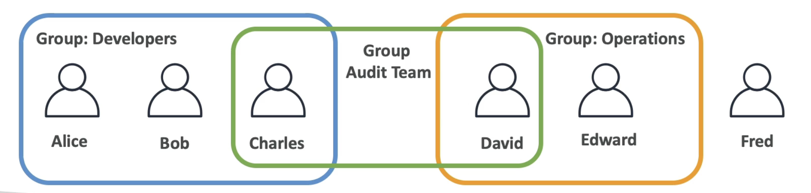
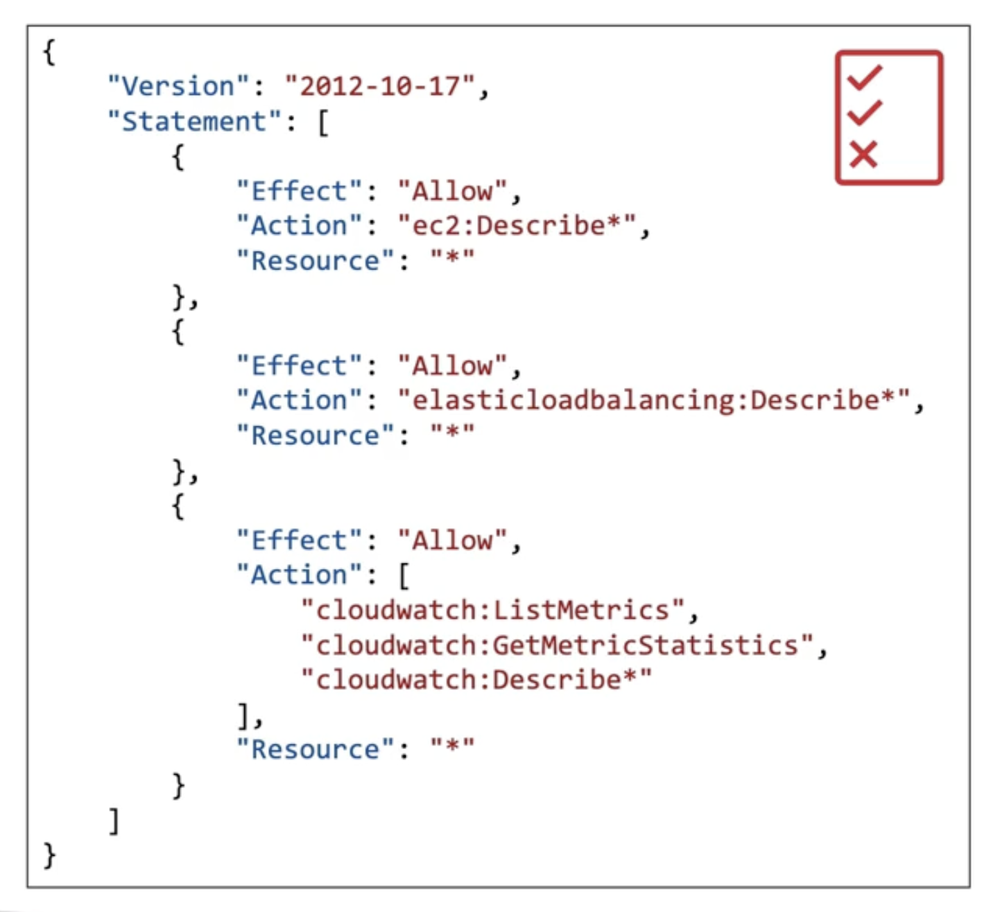
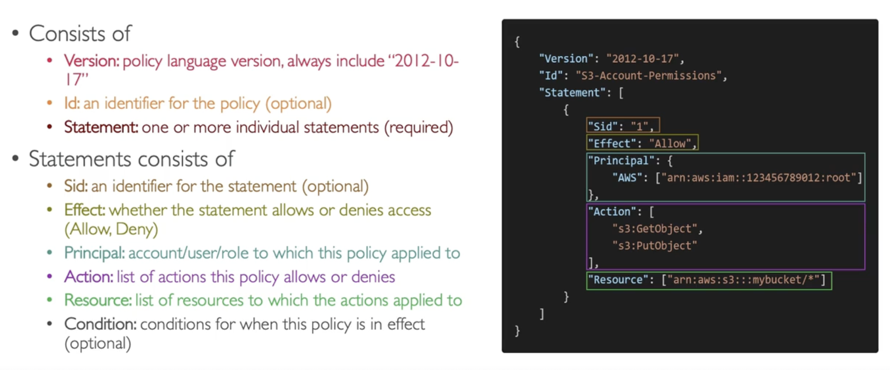
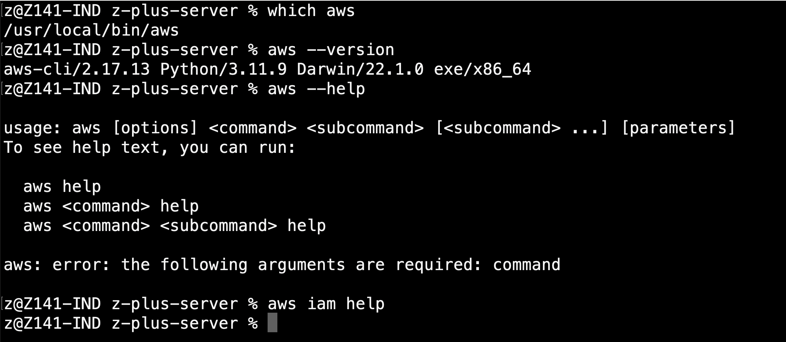

AWS
AWS stands for Amazon Web Services. Amazon offers many cloud services that we can use to configure to setup computer systems from our home by doing the operations on their website.IAM - Identity and Access Management
IAM is the service that we use to manage users in the organization. There is one root account that is created by default.
NOTE: THIS ROOT ACCOUNT SHOULD NOT BE SHARED TO ANYONE ELSE.
We can group various users in the organization into different groups. A user can be a part of multiple groups or no group at all. And a group cannot contain another group
IAM-Permissions
We can define various policies on what a user/group can or cannot do based on JSON documents called policies
The policies follow an inheritance concept, the users get the policies of the group they are in, and if a user is in multiple groups they get the policies of both the groups. If a policy is directly attached to a user it is called as an inline policy
The Principle of Least Privilege is that we should NOT give more permissions than a user needs.
MFA
It is recommended to have MFA for all accounts on AWS.
MFA = Password you know + Security Device you know
A Security device can be any of the following
- Virtual MFA Device (Like Authy, Google Authenticator)
- Universal 2nd Factor (U2F) Security Key
- Hardware Key Fob MFA Device
Accessing AWS
There are 3 main ways to access AWS services
- Management Console - aka the website UI
- CLI - aka our own computer terminal which makes calls to the AWS API
- SDK - aka from software programs that we write
Management console is fine but for AWS to allow accessing its services from the SDK/CLI it needs an access secret which is effectively a password
AWS CLI
The AWS Cli is a tool that helps us to connect to the AWS service from our own terminal
AWS Athena
AWS Athena is a way to run SQL queries on top of your S3 buckets. You only need to the do the following steps
- Create some s3 bucket where your data is stored (usually parquet files, csv files etc)
- Create a bucket for athena to store its results
- Go to AWS athena and create a database and a table that it will be using for reference when you query the buckets
- You are now ready to go - Write simple SQL Queries and get the output
There are different ways of optimizing your Athena queries
- Compress the data stored in the bucket so the scanning is done over smaller data
- Organize the data into different folders each with names like "column_name=value" that way when you add filters to your SQL query, Athena automatically uses the names as a way to skip over other unnecessary data
You can also run these queries on top of other databases like aurora db, dynamodb etc by connecting to a lambda function, but I don't know how to do this yet